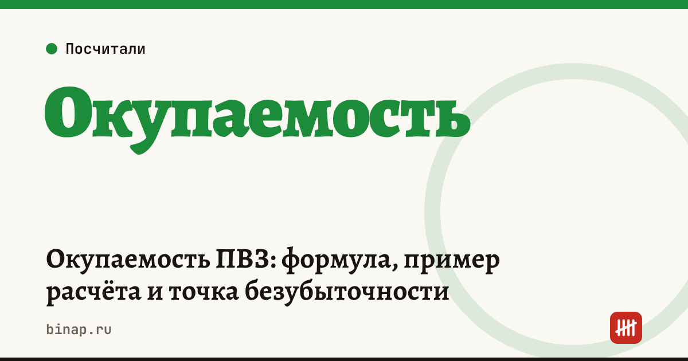

Окупаемость ПВЗ: формула, пример расчёта и точка безубыточности

Пункт выдачи окупается, когда прибыль за месяцы работы покрывает вложения в открытие: ремонт, мебель, оборудование и депозит за аренду. Главная переменная — число заказов в день, а главная ошибка — считать доход по рекламным цифрам площадки, а не по своему отчёту. Ниже формула, пример и проверка на пессимистичном сценарии.
Коротко
- Доход ПВЗ = выданные заказы в день × доход с одного заказа × рабочие дни.
- Доход с заказа считайте по отчёту: выплата площадки за месяц ÷ число выданных заказов.
- Прибыль = доход − аренда − зарплата − коммуналка и расходники − удержания − налог.
- Срок окупаемости = вложения ÷ прибыль в месяц.
- Проверьте расчёт при потоке на 20–30% меньше: если пункт уходит в минус, риск высокий.
Сроки, изменения и разборы для ИП и самозанятых — каждое утро в Telegram и MAX. Подпишитесь, чтобы не пропустить.
Формула
Прибыль в месяц = заказы в день × доход с заказа × дни − (аренда + зарплата + прочие расходы + удержания) − налог.
Срок окупаемости = вложения в открытие ÷ прибыль в месяц.
Точка безубыточности (заказов в день) = расходы в месяц ÷ (доход с заказа × дни) — для УСН «доходы» расходы делят ещё на 0,94, чтобы учесть налог.
Пример
Расчёт редакции, цифры условные — подставьте свои.
| Статья | В месяц |
|---|---|
| Доход: 250 заказов × 20 ₽ × 30 дней | 150 000 ₽ |
| Аренда | −35 000 ₽ |
| Зарплата сотрудников с налогами и взносами | −60 000 ₽ |
| Коммуналка, интернет, расходники | −10 000 ₽ |
| Удержания и штрафы площадки | −3 000 ₽ |
| Налог УСН 6% (без уменьшения на взносы) | −9 000 ₽ |
| Прибыль | 33 000 ₽ |
Вложения в открытие — 600 000 ₽. Срок окупаемости: 600 000 ÷ 33 000 ≈ 18 месяцев. Точка безубыточности: 108 000 ÷ 0,94 ÷ (20 × 30) ≈ 192 заказа в день.
Пессимистичный сценарий: 200 заказов в день вместо 250. Доход — 120 000 ₽, налог — 7 200 ₽, прибыль — 4 800 ₽ в месяц, срок окупаемости — больше 10 лет. Небольшое падение потока превращает прибыльный пункт в почти нулевой.
Посчитайте свой пункт в калькуляторе окупаемости ПВЗ: он сразу показывает точку безубыточности.
Что проверить до открытия
- [ ] Поток: сколько заказов в день выдают пункты рядом и сколько их.
- [ ] Доход с заказа: по отчётам знакомых владельцев или условиям площадки на дату расчёта.
- [ ] Срок аренды: вложения должны вернуться раньше, чем закончится договор аренды.
- [ ] Зарплата: график работы сотрудников при нужных часах работы пункта.
- [ ] Удержания: за что площадка удерживает деньги и как оспаривать.
- [ ] Резерв: деньги на 2–3 месяца расходов, пока поток растёт.
Как устроена экономика пунктов на разных площадках — в разборе экономика ПВЗ. Если не хватает денег на открытие — как сравнить кредиты. Все шаги — в разделе «Владельцам ПВЗ».
Частые вопросы
Где взять доход с одного заказа? Разделите выплату площадки за месяц на число выданных заказов из того же отчёта. Если пункт ещё не открыт, используйте условия площадки на дату расчёта и опыт владельцев соседних пунктов.
Что важнее для окупаемости — аренда или поток? Поток: при фиксированных расходах каждый дополнительный заказ почти целиком идёт в прибыль. Поэтому место с большим потоком и более дорогой арендой часто выгоднее дешёвого помещения.
Какой налоговый режим выбрать? Чаще всего УСН. Если аренда и зарплата составляют большую долю дохода, сравните «доходы» и «доходы минус расходы» на своих цифрах.